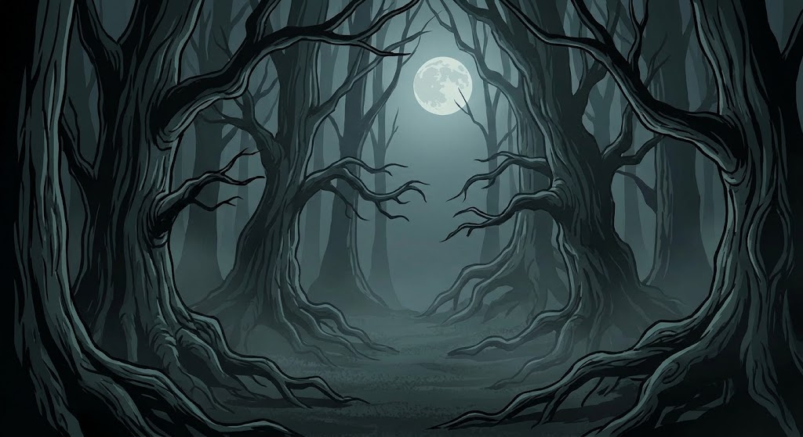

You decide to avoid the mansion and walk into the deep, dark woods. Fog surrounds your feet, making it hard to see where you are going.

As you walk deeper, you find a mysterious glowing pumpkin on a stump and hear a strange voice calling for help from a nearby cave.